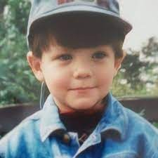
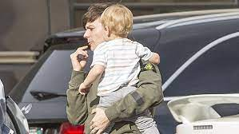
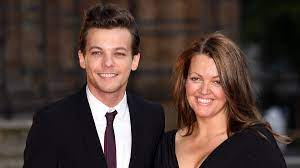

Louis Tomlinson was born in Doncaster, South Yorkshire, England, on December 24, 1991. His parents, Johannah and Troy Austin, split when he was young, and he adopted the last name of his stepfather, Mark Tomlinson. Georgia, Charlotte, Félicité, and twins Daisy and Phoebe were Tomlinson's half-sisters when he was growing up. Later, his mother and stepfather split. In 2014, Tomlinson's family grew again as his mother and husband Daniel Deakin welcomed another set of twins, Ernest and Doris. Tomlinson attended The Hayfield School in Doncaster, and after failing to graduate, he finished his education at Hall Cross Academy. He was a part of various school plays, including the musical Grease, while at Hall Cross. He did part-time jobs in retail and at Doncaster Rovers Football Club outside of school.
Louis Tomlinson as a child.
Johannah, the artist’s mother, died of leukaemia in late 2016, at the age of 43. Félicité, Tomlinson's 18-year-old sister, died of a heart attack fifteen months later, leaving Tomlinson with yet another tragedy. Tomlinson and Briana Jungwirth welcomed a son, Freddie Reign, in January 2016.
Tomlinson with son Freddie.
"Just Hold On," Tomlinson’s first solo single, was released in December 2016 and reached No. 2 in the United Kingdom. Seven months later, a follow-up single with Bebe Rexha, "Back to You," also made the Top 10. Tomlinson published "Two of Us" in March 2019, a touching homage to his mother.
Louis with his mother, Johannah.
His tours are all sold out and can be found on his official website as well as other places.